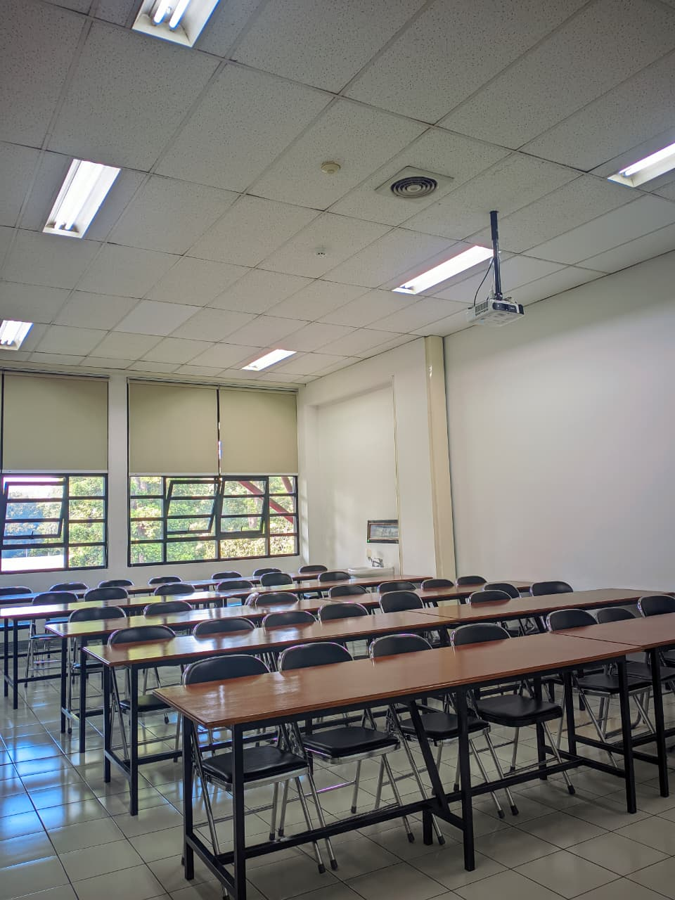

Fasilitas Laboratorium
Laboratorium Teknik Biomedis Institut Teknologi Bandung dilengkapi dengan berbagai fasilitas modern untuk mendukung kegiatan penelitian, praktikum, dan pengembangan teknologi di bidang biomedis.

Ruang Optik

Ruang Praktikum
Program Bimbingan Praktik Kerja Lapangan (PKL)
🏫 Tentang Program
Program bimbingan PKL bagi siswa SMK untuk memberikan pengalaman langsung di lingkungan laboratorium sehingga siswa dapat mengembangkan keterampilan teknis, kedisiplinan, dan profesionalisme.
🎯 Tujuan
- Memberikan pemahaman dunia kerja di bidang teknik biomedis.
- Meningkatkan keterampilan teknis dan analitis siswa.
- Menumbuhkan sikap profesional dan tanggung jawab.
📌 Kegiatan Siswa PKL
- Mengikuti pengenalan alat-alat laboratorium.
- Mendukung kegiatan riset dosen dan mahasiswa.
- Membantu perawatan dan kalibrasi peralatan laboratorium.
- Mengerjakan proyek mini sesuai bidang penelitian.
- Membuat laporan dan presentasi hasil kegiatan.
📸 Dokumentasi Kegiatan PKL

Angkatan 1
&(2).jpeg)
Kebersamaan

Angkatan 2